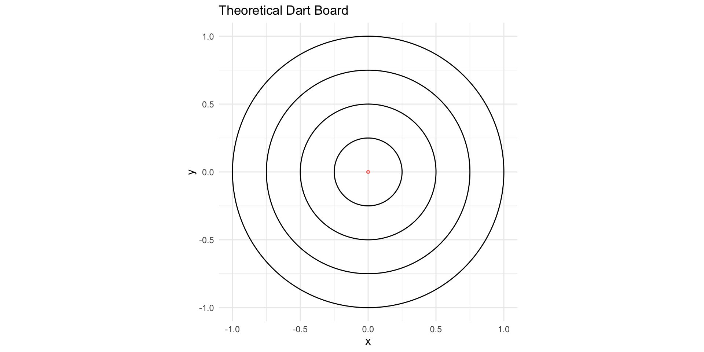
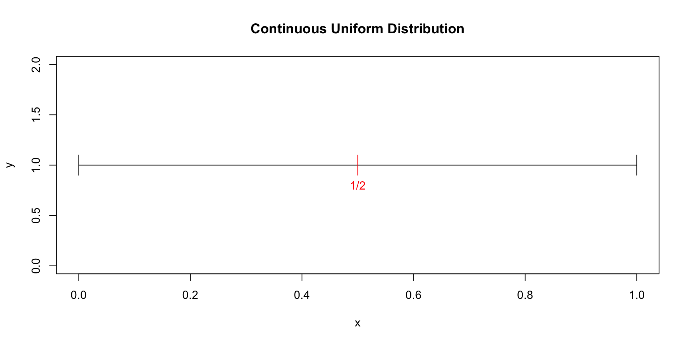
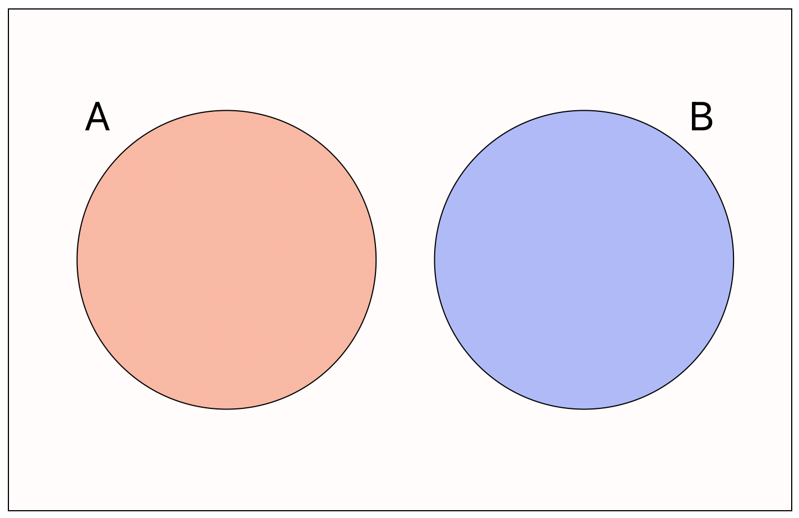
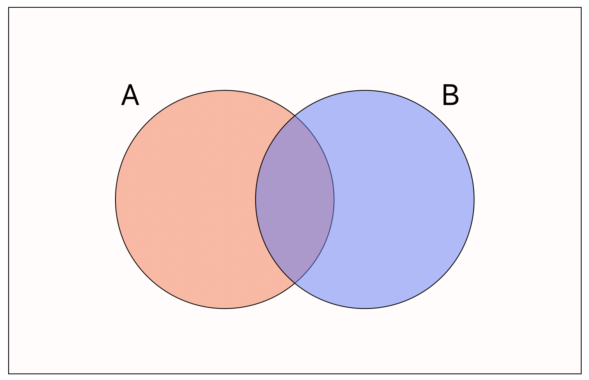
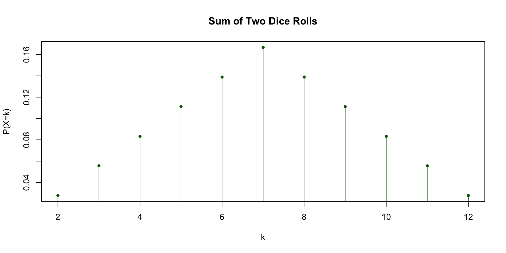
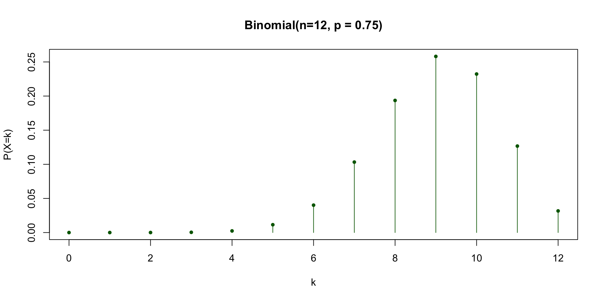
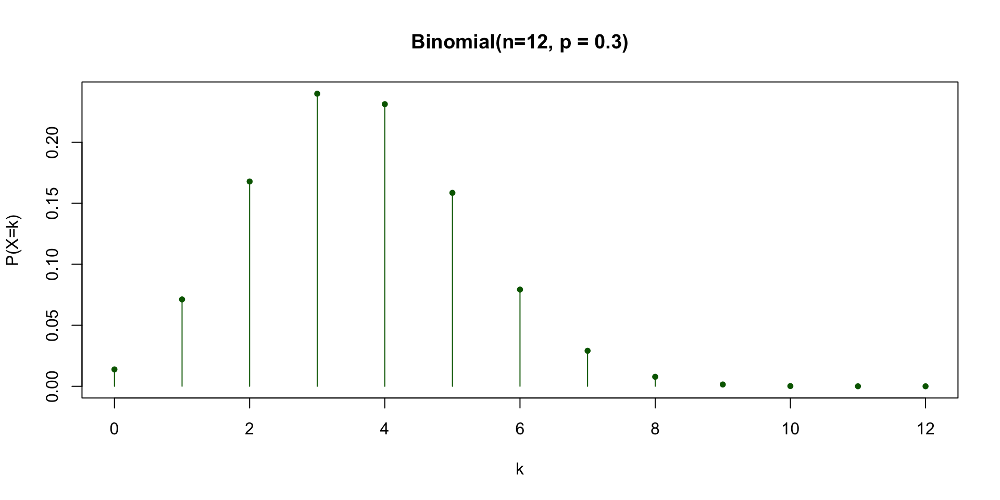
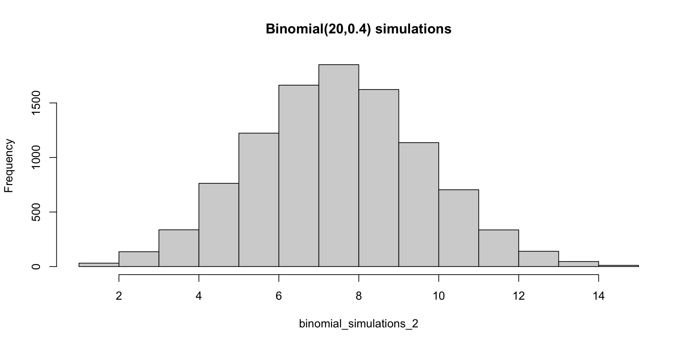
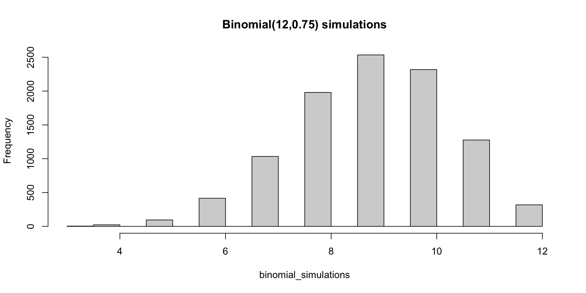

![]()

PSTAT 10 Data Science Principles
Lecture 10: Discrete Random Variables
September 1, 2026
Introduction
🔁 Review: Lecture 9
👈 Last lecture we looked at the fundamentals of probability, including:
- Events (outcomes)
- Sample Spaces
- Frequentist Probability
- Simulation
sample()Functionreplicate()Function
👀 Outline: Lecture 10
👇 This week we will be continuing our exploration of probability by studying:
- Types of events
- Conditional probability
- Discrete random variables
- Discrete Probability Distributions
- Discrete Uniform
- Bernoulli
- Binomial
- Poisson
Events
🎲 Events
The sample space \(\Omega\) is the collection of all outcomes \(\omega\) of a random experiment.
- A collection of outcomes is known as an event.
- We typically denote events with capital letters, e.g. \(A\), \(B\) or \(C\).
Example:
A dice rolling experiment has 6 possible outcomes, rolling a number 1 through 6.
- Our first event of interest might be to roll a six (i.e. one outcome).
- Our second event of interest might be to roll a number greater than 3 (i.e. the three outcomes 4, 5 and 6).
🎯 Certain and Probability-Zero Events
Clarifying Terminology
We say that an event is certain (guaranteed, ensured, definitely going to happen) if it occurs with probability 1.
Additionally, we say that an event occurs with probability zero if it “never” happens.
📌 This is not the same as being impossible!
Example
- In the dice rolling experiment a certain event might be the event that we roll a number less than 7.
- An event that occurs with probability zero might be to roll a 7.
- Okay in this case it’s the same as being impossible, but not always!
- In particular, when we consider continuous random variables, we will see that events can occur with probability zero but are not impossible.
⁉️ Probability Zero and Impossible
There is a subtle difference between an event that is impossible and an event that occurs with probability zero.
Infinite Bullseye
- To gain an intuitive understanding of the difference, consider a dartboard with area \(2\pi\) (therefore with radius of 1).
- We define an infinitely small bullseye, i.e. it is exactly the coordinate \((0,0)\).
- What is the probability a dart thrown uniformly at random exactly hits \((0,0)\)?
- The probability of hitting the bullseye is zero since the area of the bullseye is zero, but it is not impossible to hit the bullseye.
- In fact, any point on the dartboard has probability zero of being hit, but it is not impossible to hit any point.
- This is a little counter-intuitive!
🎯 Theoretical Dartboard
🎯 Example — Probability Zero Events
- Equivalently, consider the interval \([0,1]\).
- If we randomly select any number within the interval, what is the probability that we pick exactly \(1/2\)?
- Since there are infinite numbers in the interval between 0 and 1, the probability of selecting 1/2 at random is 0.
‼️ This doesn’t mean that it will never happen!
In fact, anytime we randomly select a number from a continuous distribution we are observing a probability zero event.
🎯 Visualizing a Probability-Zero Event

⚡ Probability Paradox
Lack of Intuition
Events with probability zero can occur — and do all the time.
- The odds of them happening are still zero.
- Intuition goes out the window.
Intuitive breakdowns are common in many probability settings:
- We can avoid (faulty) intuition with simulation.
- Discrete logic simplifies things — computers figured this one out.
Let’s now turn to the topic of mutually exclusive and mutually inclusive events.
🚫 Mutual Exclusivity
We say that two events are mutually exclusive when
\[ \mathbb{P}(A\cap B) = \mathbb{P}(A~\text{AND}~B)= 0. \]

🔀 Mutual Inclusivity
When two events are not mutually exclusive we have that
\[ \mathbb{P}(A\cap B) > 0. \]

➕ Addition Rule
What is the addition rule?
The addition rule in probability states that
\[ \mathbb{P}(A\cup B) = \mathbb{P}(A) + \mathbb{P}(B) - \mathbb{P}(A\cap B). \]
- Inutitively, the probability that event \(A\) or \(B\) occurs is equal to the sum of the probabilities that events \(A\) and \(B\) occur, minus the probability that both events \(A\) and \(B\) occur.
- Can you see why we need to subtract the intersection?
Addition Rule — Mutual Exclusivity
Recall that when \(A\) and \(B\) are mutually exclusive we have \(\mathbb{P}(A\cap B) = 0\), and so for such events
\[ \mathbb{P}(A\cup B)=\mathbb{P}(A)+\mathbb{P}(B). \]
🚫 Complementary Events
The complement of an event \(A\), written \(A^c\), means all other outcomes besides those contained in \(A\), i.e. the event such that
\[ \mathbb{P}(A^c) = 1-\mathbb{P}(A) \]

❓ Conditional Events
What is conditional probability?
Sometimes it is useful to think of the probability of an event \(A\) assuming some condition about a different event \(B\).
Formally, the conditional probability of event \(A\) given \(B\) is denoted
\[ \mathbb{P}(A|B)=\frac{\mathbb{P}(A\cap B)}{\mathbb{P}(B)}. \]
Examples
- When rolling a 6-sided fair dice, what is the probability that we roll a number greater than 3 given that you roll an even number?
- When drawing a card from a standard 52 card deck, what is the probability that you draw the ace of spades given that you draw an ace?
🔗 Independent Events
Mutual Exclusivity vs Independence
Mutually exclusive events means that two events cannot happen at the same time.
Independence, on the other hand, simply means that the outcome of one event does not impact the outcome of another.
Formally, two events \(A\) and \(B\) are independent when:
\[ \mathbb{P}(A|B) = \mathbb{P}(A), \]
- That is, when \(A\) conditioned on \(B\) occurs with the same probability as \(A\) unconditioned on \(B\).
📐 Bayes’ Theorem
It is often very hard to solve \(\mathbb{P}(A|B)\) but very easy to solve \(\mathbb{P}(B|A)\).
In this case, Bayes’ Theorem provides a useful identity for linking the two.
Bayes’ Theorem states that:
\[ \mathbb{P}(A|B) = \frac{\mathbb{P}(B|A)\cdot \mathbb{P}(A)}{\mathbb{P}(B)}. \]
📌 Bayes’ Theorem is particularly useful when it is easy to simulate \(\mathbb{P}(A)\), \(\mathbb{P}(B)\) and \(\mathbb{P}(B|A)\), but very difficult to simulate \(\mathbb{P}(A|B)\).
💪 Exercise — Conditional Probability
04:00
Suppose you roll 3 fair 6-sided dice.
- Write code using
m = 10000simulations to approximate the probability that their sum is at least 12 given that their product is at least 9.
Make sure to set a seed using set.seed() — you might find the functions apply() and which() helpful.
✅ Solution — Conditional Probability
[1] 0.4459681- Simulate
n = 10000rolls of 3 dice, storing each roll as a column ofdice_rolls. - Use
which()to find the columns (rolls) whose product is at least 9, then subsetdice_rollsdown to just those columns. - Among that subset, use
apply()andmean()to compute the proportion whose sum is at least 12 — this directly approximates \(\mathbb{P}(\text{sum} \geq 12 \mid \text{product} \geq 9)\).
[1] 0.4459681- Compute the sum and product of every roll across all
ntrials — no subsetting yet. - Count how many rolls satisfy both conditions (
sum_rolls >= 12 & prod_rolls >= 9) and divide by the count satisfying just the conditioning event (prod_rolls >= 9). - This is the simulation version of \(\mathbb{P}(A\mid B) = (\mathbb{P}(A\cap B)) / \mathbb{P}(B)\).
Discrete Random Variables
📚 More Formal Concepts
In the next section we will introduce the following concepts:
- Discrete Random Variables
- Supports
- Probability Mass Functions
- Cumulative Distribution Functions
We will first quickly cover some heuristic definitions before considering several examples.
📌 Don’t worry too much about the mathematics — focus on intuition!
🎲 Random Variables
What are random variables?
A random variable is a mathematical object that can take numerical values corresponding to outcomes of a random experiment.
- We typically denote a random variable with capital letters, e.g. \(X,Y\) or \(Z\), and their realizations (i.e. the values they take) by lowercase \(x,y\) or \(z\).
- The range of values that each random variable \(X\) can take is known as the support of \(X\).
- Intuitively, you can think of a random variable as a function that takes a value randomly according to some underlying probability.
🎲 Examples — Random Variables
- For coin flips we could define \(X\in \{0,1\}\) where \(X=1\) corresponds to heads and \(X=0\) tails.
- For fair 6-sided dice rolls we could define \(X\in\{1,2,...,6\}\) where \(X=4\) means we rolled a 4.
- For the sum of dice rolls we could define \(X\in\{2,3,...,12\}\).

🔢 Discrete Random Variables
Each of the above random variables have a discrete (more specifically a countable) support, and are therefore called discrete random variables.
- Intuitively, a discrete random variable’s possible values can be listed out one by one, even if the list is infinite (e.g. the counting numbers).
- Examples: the number of heads in coin flips, the sum of dice rolls, or the number of customers arriving in an hour.
If a random variable can take (uncountably) infinite values (i.e. a continuous interval) we say that the random variable is continuous.
- Intuitively, a continuous random variable’s possible values cannot be listed out — between any two possible values there are infinitely many more.
- Examples: a person’s exact height, the time until a bus arrives, or a temperature reading.
📊 Probability Mass Functions
The probability mass function (PMF) of a discrete random variable \(X\) is a function \(p_X(k)=\mathbb{P}(X=k)\) describing the probability of the random variable taking different values in its support.
Example:
Consider the dice roll experiment. The probability that \(X\) takes the values \(1, ..., 6\) are all \(\frac{1}{6}\) and \(0\) for all other integers. We can write this
\[ p_X(x)=\mathbb{P}(X=x)=\begin{cases} \frac{1}{6} & \text{if } x\in\{1,2,...,6\} \\ 0 & \text{otherwise}. \end{cases} \]
This is known as a discrete uniform distribution, one of several common named distributions.
📋 Common Discrete Distributions
The following are some of the most common probability distributions for discrete random variables:
- Uniform Discrete Distribution
- E.g. rolling a fair die, or drawing a random card rank.
- Bernoulli Distribution
- E.g. a single coin flip, or whether a customer clicks an ad.
- Binomial Distribution
- E.g. the number of heads in 10 coin flips, or the number of defective items in a batch.
- Poisson Distribution
- E.g. the number of emails received per hour, or the number of earthquakes per year.
🎲 Uniform (Discrete) Distribution
A uniform (discrete) random variable \(X\sim\mathcal{U}(n)\) describes the outcome of an experiment with \(n\) equally likely outcomes.
Since we have \(n\) equal probabilities which must all add to one, the probability mass function of \(X\) is given by
\[ p_X(k)=\frac{1}{n};\quad k\in\{1, ..., n\} \]
📌 Often we do not specify that the mass function is zero for values other than the support and leave it implied.
We have already demonstrated how we use the sample() function for the discrete uniform.
📊 Long-Run Averages
Often we are not interested in the probability of a specific event but instead wish to know about the average behaviour of all events.
Let’s consider the set of 12 counts of 2 summed dice.
[1] 4 9 10 6 5 7 7 6 7 5 5 11[1] 6.833333💡 Intuition: If we kept rolling forever, the running average would settle down and stop changing — that settling-down number is what we call the expectation.
🎯 Expectation
Suppose that we run a large number of random trials.
The expected value or expectation is given by the average of all trials as the number of trials goes to infinity.
Formally, the expectation of a (discrete) random variable \(X\) is given by
\[ \mathbb{E}[X] = \sum_{x\in\mathcal{X}} x\cdot \mathbb{P}(X=x). \]
where \(\mathcal{X}\) is the support of \(X\).
In this course, we can think of the expectation of a random variable \(X\) is given by the limit of the sample mean
\[ \mathbb{E}[X] = \lim_{n\to\infty}\left(\frac{\sum_{i=1}^n x_i}{n}\right). \]
🎯 Example — Expectation of a Uniform RV
Recall \(X\sim\mathcal{U}(6)\) (one fair die roll) has PMF \(p_X(k)=\frac{1}{6}\) for \(k\in\{1,...,6\}\).
Applying the definition of expectation:
\[ \mathbb{E}[X] = \sum_{k=1}^{6} k\cdot\frac{1}{6} = \frac{1+2+3+4+5+6}{6} = 3.5 \]
We can confirm this by simulating many die rolls and averaging:
📌 In general, for \(X\sim\mathcal{U}(n)\), \(\mathbb{E}[X] = \frac{n+1}{2}\).
💪 Exercise — Expectation
04:00
Suppose we repeatedly flip two fair coins. We are interested in determining the expected number of flips it takes to get both coins to land on tails.
- Simulate 100 trials (one trial is flipping 2 coins).
- Count the number of trials it takes to get two tails.
- Record that number.
- Repeat this experiment 1000 times.
Write a function using replicate() to calculate the number of trials until a double-tails flip, then use replicate() again for the 1000 experiments.
Again, you may find the function which() to be helpful.
✅ Solution — Expectation
[1] 3.967tt()flips two coins 100 times —sum(sample(0:1, 2))equals 2 exactly when both land tails — and returns the index of the first double-tails flip usingwhich(flips == 2)[1].replicate(1000, tt())repeats that experiment 1000 times, giving 1000 simulated waiting times until a double-tails result.mean(expected_flips)averages those waiting times to approximate the expected number of flips.
🪙 Bernoulli Distribution
A Bernoulli random variable \(X\sim\text{Bernoulli}(p)\) describes the outcome of an experiment with a binary outcome (a Bernoulli trial) where the probability of a “successful outcome” is \(p\) and the probability of failure is \(1-p\).
- A Bernoulli random variable only ever takes two possible values: \(X=1\) (success) or \(X=0\) (failure).
- E.g. a single coin flip, whether a patient recovers, or whether an email is spam.
The probability mass function of \(X\) is given by
\[ p_X(k)=p^k(1-p)^{1-k};\quad k\in\{0,1\}. \]
Plugging in \(k=0\) and \(k=1\) shows why this formula makes sense:
\[ p_X(0) = p^0(1-p)^{1-0} = 1-p, \qquad p_X(1) = p^1(1-p)^{1-1} = p. \]
🪙 Example — Bernoulli Distribution
Back to coin flipping…
- Consider flipping a biased coin that is three times as likely to land on heads than on tails.
- Let \(X\) describe this experiment where \(X=1\) means heads and \(X=0\) means tails.
- The probability mass function of this Bernoulli random variable is \(p_X(k) = 0.75^k\cdot 0.25^{1-k}\) for \(k\in\{0,1\}\).
- This gives the probabilities \(\mathbb{P}(X=1)= 0.75\) and \(\mathbb{P}(X=0)=0.25\).
🎯 Binomial Distribution
A Binomial random variable \(X\sim\text{Bin}(n,p)\) describes the experiment of counting the number of successes in \(n\) independent Bernoulli trials, each with success probability \(p\).
- Intuitively, a Binomial random variable is just a sum of \(n\) independent Bernoulli\((p)\) trials, i.e. \(X = X_1 + X_2 + \dots + X_n\) where each \(X_i\sim\text{Bernoulli}(p)\).
- Each \(X_i\) contributes a \(1\) if that trial succeeds and \(0\) otherwise, so \(X\) simply counts up the successes.
The probability mass function of \(X\) is given by
\[ \mathbb{P}(X=k) = {n \choose k}p^k(1-p)^{n-k}; \quad k \in\{0,1,...,n\}, \]
where the support is all integers from \(0\) (no successes) to \(n\) (all successes).
🔢 Choose Function
In the PMF we used the choose function \({n \choose k}\) — \(n\) choose \(k\) — which is defined as
\[ {n\choose k} = \frac{n!}{k!(n-k)!}. \]
This definition uses factorials where
\[ n! = \prod_{i=1}^n i = 1 \times 2 ~\times~ ...~ \times~ n. \]
📌 Combinatorially, \({n\choose k}\) counts the number of ways to choose \(k\) items from a set of \(n\), without regard to order.
We can use the built-in function choose(n,k) to compute this in R.
🎯 Example — Binomial Distribution
Consider an experiment where we flip the biased coin from our Bernoulli example 12 times. We wish to determine the probability that we obtain 8 heads.
We define the random variable \(X\), which describes the number of heads from the 12 throws. Therefore \(X\sim\text{Bin}(12,0.75)\) with support \(\{0,1,...,12\}\), which gives
\[ \begin{align} \mathbb{P}(X=8) & = {12 \choose 8}\cdot(0.75)^8\cdot (0.25)^4. \end{align} \]
🎯 Binomial Distribution — p = 0.75

🎯 Binomial Distribution — p = 0.3

🎯 Example — Expectation of a Binomial RV
Since \(X\sim\text{Bin}(n,p)\) is the sum of \(n\) independent Bernoulli\((p)\) trials, and each trial succeeds with probability \(p\) on average, the expected number of successes is simply
\[ \mathbb{E}[X] = np. \]
Recall \(X\sim\text{Bin}(12, 0.75)\) from our biased-coin example. Applying the formula:
\[ \mathbb{E}[X] = 12 \times 0.75 = 9. \]
We can confirm this by simulating many sets of 12 biased-coin flips and averaging the number of heads:
📌 In general, for \(X\sim\text{Bin}(n,p)\), \(\mathbb{E}[X] = np\).
📈 Cumulative Distribution Functions
The cumulative distribution function (CDF) of a random variable \(X\), denoted \(F_X(x)\), describes the probability that \(X\) takes a value less than or equal to some value \(x\), i.e.
\[ F_X(x) = \mathbb{P}(X\leq x). \]
For a discrete random variable this probability is just the sum of the probabilities of the random variable taking the values below \(x\), i.e.
\[ F_X(x) = \sum_{k\leq x} p_X(k). \]
- The PMF gives the probability of hitting one specific value; the CDF accumulates (adds up) the PMF over all values up to \(x\).
- Consequently the CDF is non-decreasing in \(x\), and \(\mathbb{P}(X=k) = F_X(k) - F_X(k-1)\) recovers the PMF from the CDF.
📈 Example — Binomial CDF
Returning to our binomial random variable example, let’s look at computing the CDF, specifically \(F_X(2)\), which is equivalent to
\[ \begin{aligned} F_X(2) & =\mathbb{P}(X\leq 2) \\ & = \mathbb{P}(X=0) + \mathbb{P}(X=1) + \mathbb{P}(X=2) \\ & = {12\choose 0}\cdot0.75^0\cdot0.25^{12} + {12 \choose 1}\cdot 0.75^1\cdot 0.25^{11} + \\ & \quad \quad \quad {12\choose 2}\cdot 0.75^2\cdot 0.25^{10} \\ & = \frac{12!}{0!\,12!}\cdot0.75^0\cdot0.25^{12} + \frac{12!}{1!\,11!}\cdot 0.75^1\cdot 0.25^{11} + \\ & \quad \quad \quad \frac{12!}{2!\,10!}\cdot 0.75^2\cdot 0.25^{10} \\ & \approx 0.0000376. \end{aligned} \]
📈 Example — Binomial CDF in R
We can quickly compute this in R.
📌 Writing our own binomial_cdf() function works, but R actually has a built-in function for this — we’ll meet it next.
🧮 Binomial R Functions
R has several in-built functions for computing and generating realizations from probability mass functions:
dbinom()- Computes the PMF: \(\mathbb{P}(X=k)\).
pbinom()- Computes the CDF: \(\mathbb{P}(X\leq k)\).
qbinom()- Computes quantiles — the inverse of the CDF.
rbinom()- Generates random realizations of the random variable.
📌 This d/p/q/r naming pattern is consistent across every distribution family in R — e.g. dnorm(), dpois() and dunif() all follow the same syntax.
🧮 dbinom() Function
The dbinom() function computes the density of a binomial distribution.
The general syntax is:
Example:
For our \(X\sim\text{Bin}(n = 12, p = 0.75)\) we compute \(\mathbb{P}(X=8)\):
[1] 0.1935777[1] 0.1935777🧮 pbinom() Function
The pbinom() function computes the cumulative distribution function of a binomial distribution.
The general syntax is the same:
Example:
For our \(X\sim\text{Bin}(n = 12, p = 0.75)\) we compute \(\mathbb{P}(X\leq 2)\):
[1] 3.761053e-05[1] 3.761053e-05🧮 rbinom() Function
The rbinom() function generates realizations of a binomial random variable.
The general syntax is the same:
Example:
To simulate 10000 realizations of \(X\sim\text{Bin}(n = 12, p = 0.75)\) and produce a histogram we have:
🧮 rbinom() Function

🧮 rbinom() Function

Summary
✅ Topics Covered
🤔 Today we covered a lot of material, including:
- Random Variables
- Probability Mass Functions
- Cumulative Distribution Functions
- Binomial Distributions
- Binomial R Functions:
dbinom()pbinom(); andrbinom()
📅 Next Class
🤩 Next class we will continue exploring probability by looking into:
- Poisson Distributions
- Generalizing R Functions
- Continuous Random Variables
- Continuous Uniform Distribution
- Normal (Gaussian) Distribution